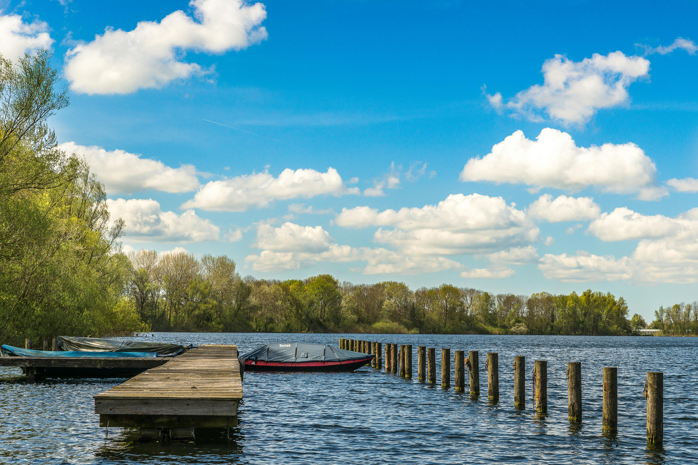

Barco en playa (simple png o jpg)
DATO INTERESANTE
Todas las embarcaciones o artefactos flotantes que salgan o se dirijan a las playas deberán hacerlo perpendicularmente a tierra, para ello navegarán con precaución y siempre a menos de tres nudos desde los 200 metros hasta la costa, o viceversa.
Playa (GIF)
DATO INTERESANTE
Las playas sirven de protección a los residentes que viven cerca del mar, ya que actúan como defensa contra fuertes vientos y olas provocados por las tormentas o el mar agitado. Las playas también tienen un papel importante en la economía.
Los océanos producen al menos 50% del oxígeno del planeta. De acuerdo con Naciones Unidas, los océanos albergan la mayor parte de la biodiversidad de la tierra y es la principal fuente de proteínas para más de mil millones de personas en todo el mundo.
Atradecer (flotantes izquierda /derecha)
DATO INTERESANTE
 Hay quien asocia los atardeceres a un momento de reflexión, puesto que es el paso al final del día y nos invita a pensar sobre lo que hemos hecho. Si metafóricamente se amplía al ocaso de la vida, en nuestros últimos momentos, es la hora de hacer repaso a todos los años vividos.
Hay quien asocia los atardeceres a un momento de reflexión, puesto que es el paso al final del día y nos invita a pensar sobre lo que hemos hecho. Si metafóricamente se amplía al ocaso de la vida, en nuestros últimos momentos, es la hora de hacer repaso a todos los años vividos.
Los atardeceres no solo marcan el fin del día, sino también el cierre de etapas y la oportunidad de reflexionar. Además, contemplarlos ofrece beneficios como la conexión con la naturaleza, la relajación mental y un momento de introspección invaluable, añade la mentora y coach.
Por ejemplo, que el sol tiene relación directa con nuestra felicidad. El sol se esconde entre nubes al atardecer. Eso se debe a que la luz del sol en el atardecer actúa directamente sobre algunas áreas específicas de nuestro cerebro encargadas de procesar las emociones, más concretamente, las positivas. Suele haber una nube de más o una de menos, un rayo que se refleja en el agua o que roza una montaña para caer un un césped verde. Hay atardeceres que son rojos, otros violetas y algunos naranjas. Algunos son neutros y se presentan en color sepia como una foto antigua.Muchas personas consideran que las puestas de sol son la expresión de la pérdida de un ser querido, de sentimientos de consuelo, seguridad y tranquilidad . Para quienes están de duelo por la pérdida de un ser querido, estas puestas de sol simbolizan el final de la vida y el comienzo de un nuevo viaje. Las puestas de sol tienen lugar al final del día y simbolizan una sensación de finalización y finalización.En resumen, los atardeceres invernales se distinguen por su belleza impactante debido a la combinación de una atmósfera más clara, la posición del sol en el horizonte y los fenómenos de dispersión de la luz que resaltan los colores cálidos y brillantes.
Lectura (fondo)
DATO INTERESANTE
La lectura es una de las habilidades más importantes que poseemos los seres humanos. Nos permite acceder al conocimiento, a la cultura, a la imaginación y a la comunicación. Sin embargo, la lectura no es algo innato, sino que requiere de un proceso de aprendizaje y de práctica. Además, existen diferentes formas de leer, según el objetivo, el interés y la velocidad que se quiera alcanzar. Te invitamos a leer la siguiente nota y seguir aprendiendo.
La lectura cambia el cerebro. Según el neurobiólogo Francisco Mora, la lectura modifica la anatomía y la fisiología cerebral, especialmente en los niños. La lectura estimula diversas áreas del cerebro relacionadas con el lenguaje, la memoria, la imaginación y las emociones. La edad ideal para aprender a leer es a los 7 años. A esta edad, el cerebro está más preparado para adquirir esta habilidad con fluidez y placer. El libro más largo del mundo es En busca del tiempo perdido de Marcel Proust. Esta obra consta de siete volúmenes y tiene más de 3000 páginas y 1.2 millones de palabras. Se estima que se tardaría unas 153 horas en leerlo completo. La velocidad promedio de lectura es entre 150 y 250 palabras por minuto (ppm). Sin embargo, se puede llegar a leer entre 400 y 700 ppm si se aplican técnicas de lectura. La lectura rápida es un mito. Aunque algunos afirman que se puede leer hasta 1000 ppm o más, lo cierto es que a esa velocidad es imposible comprender lo que se lee. El ojo humano tiene limitaciones físicas para captar las palabras, y el cerebro tiene limitaciones neuronales para procesarlas.
SOL (icono que redirige a un sitio)
DATO INTERESANTE
Nuestro estrella es increíble. El Sol tiene una edad aproximada de 4.500 millones de años, ya ha consumido más de la mitad de su vida. En realidad no un objeto sólido, es una bola de gas ardiente -75% hidrógeno y 25% helio- que genera temperaturas inconcebibles. Está a 150 millones de kilómetros de la Tierra y sin su energía la vida no sería posible tal como la conocemos.
1) El Sol es el objeto más grande de nuestro sistema solar
2) El plasma caliente en ebullición se regula mediante potentes campos magnéticos
3) Un indicador de la actividad solar son las manchas solares
4) Las tormentas solares pueden poner en peligro la Tierra
5) Los expertos explican que cuanto más digitalizado e interconectado esté nuestro planeta, mayor será la catástrofe que puede causar una gran tormenta solar.
6) Aproximadamente cada 11 años el sol se vuelve extremadamente activo
Imagenes con filtro
¿Por que usar filtros en las imagenes?
Los filtros ayudan a minimizar el deslumbramiento y los reflejos, realzan los colores, reducen la luz que entra en la lente y más . Cada filtro de lente tiene un propósito específico, ya que cada uno está diseñado para brindar un efecto específico que puede ayudar a mejorar el aspecto final de una imagen.